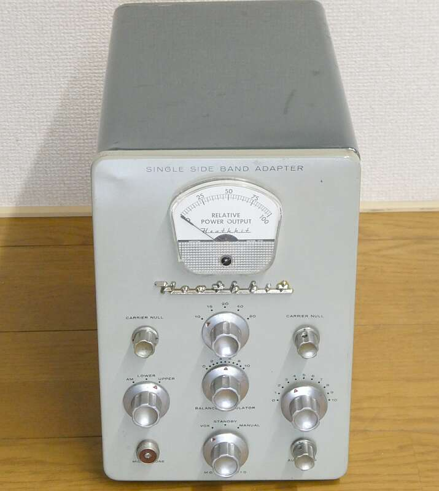
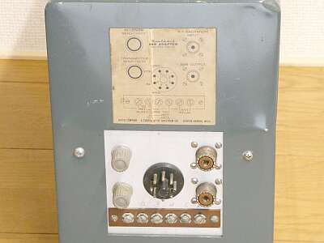
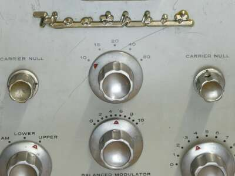
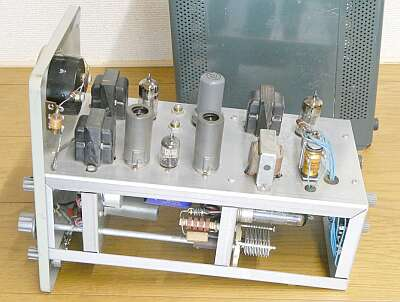
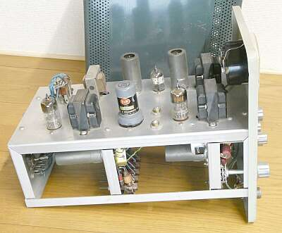
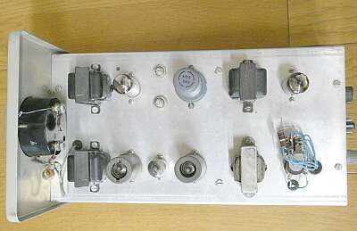
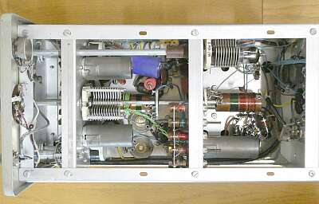
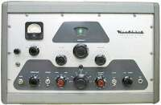
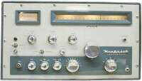

| Ｈｅａｔｈ-Ｋｉｔ ＳＢ-１０ |
 |
ＳＳＢの黎明期に、ＡＭ／ＣＷ送信機に付け加えることで、新たに高額なＳＳＢ無線機を入手しなくてもＳＳＢでオンエアすることを目的としたアダプタです
説明書には、当時のＡＭ／ＣＷ送信機 ＤＸ-１００（Ｂ）に接続する改造内容の記載もあります
１９５９年頃の製品と考えられます
 |
リアパネルです
M型接栓は、ＲＦの入出力です
マイク入力端子は、フロントパネルに用意があります |
|
 |
本機の構成
ＡＭ／ＣＷ送信機の送信する電波をキャリアとしてＳＳＢ信号を作るＰＳＮ方式のアダプタです
最大３Ｗ程度の入力を使って１０Ｗ ＰＥＰのＳＳＢ出力を得ようとするものです
オーディオ・フェーズ・シフト・ネットワーク部には、高名なＢ＆Ｗ社 Ｍｏｄｅｌ３５０ ２Ｑ４ が使用してあります
電波を出す周波数数ごとに、必要な調整が必要です
簡単にＱＳＹとは行きません・・・ |
|
 |
シャーシ下 右端で横になっている真空管
これが、本機の終段 ６ＢＱ５ です
真空管は８球が使用され、ちゃんとＶＯＸ機能も内蔵して、ＳＳＢらしい運用の提供を意識してあるところが素晴らしいです |
 |
手前中央
Ｂ＆Ｗ社 Ｍｏｄｅｌ３５０ ２Ｑ４ が見えています
オーディＰＳＮのキーマンです
どの程度のキャリアサプレッションが取れるのかな？
仕様では、４０ｄｂ以上となっています
また、逆サイドバンドの抑圧は３０ｄｂ以上となっています |
 |
シャーシ上部
ごちゃごちゃとしているのは、切替リレー部です
|
 |
シャーシ下の様子
終段タンクコイルが見えます（πマッチです）） |
|
さすがＨｅａｔｈ－Ｋｉｔというべきか、簡単に新ものであるＳＳＢに取り組めない方を救済するためのアダプタの発売です
極めてアマチュアライクで、素晴らしいと思います
ＡＭ／ＣＷ送信機の、延命策の一つかもしれませんが・・・
 |
ＤＸ-１００（Ｂ）送信機（１９５５－６０年頃 ＄１８９．５）
６１４６ｘ２ ＡＭ１００Ｗ送信機です
変調管には、１６２５ｘ２ ＶＦＯも内蔵した本格的な送信機です
発売当時ＳＢ-１０は、＄８９．９５で広告に掲載があります
このものを対象に、アダプタとしての取付（改造）説明がなされています
|
 |
ＴＸ-１（１９５８－１９６４年 ＄２３４．９５）
こちらも１００ＷのＡＭ／ＣＷ送信機ですが、このものには改造なくそのまま接続が出来るようです
調べると確かに、モード切替SWを有しています |
簡単に言えば、送信機本体のドライバから取り出したＲＦ出力をキャリアとしてＳＳＢを作り、ファイナル入力に戻して１００Ｗまで増力する、そんなイメージです
当時の広告には、ＤＸ-１００（Ｂ）については少しの改造で使用できる旨の説明があります
ＰＳＮ方式だからこそできる、ＳＳＢアダプタです
なんちゃってＳＳＢみたいな気もしますが・・・・
|
同じ時期に、従来のＡＭ／ＣＷ受信機を、本格的なＳＳＢ／ＣＷ受信機にUpgradeしようという、やはり後付けで対応ができるアダプタが発売されていました
Hammarlund(ハマーランド)社から発売されたＨＣ-１０ Converterも、その一つです |
| 2025.10 追記 |
|
| 2023.09 JA4FUQ |
|